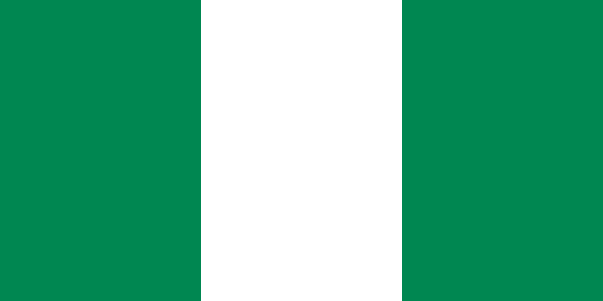
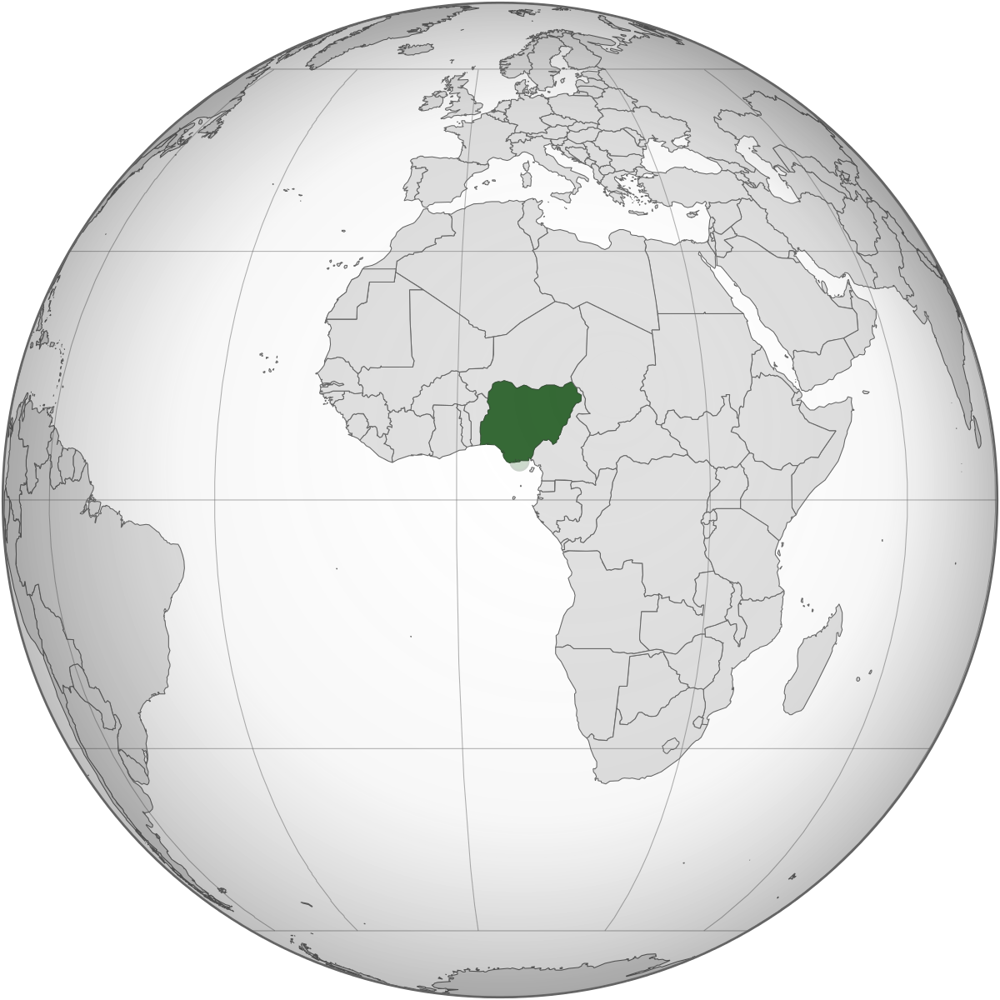
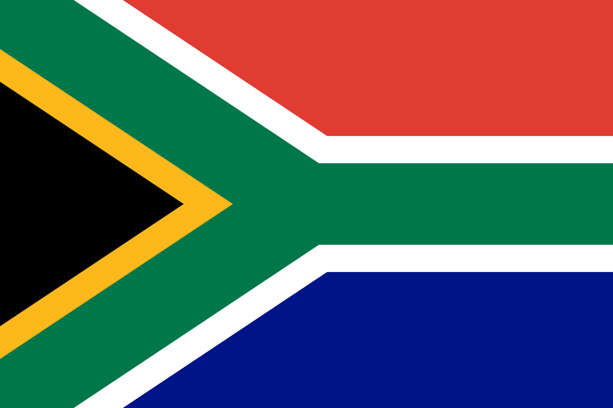
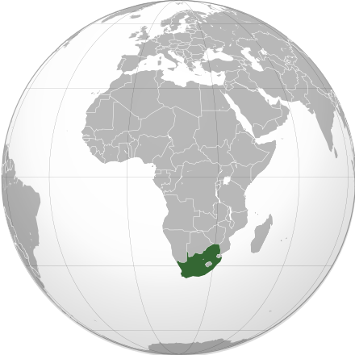
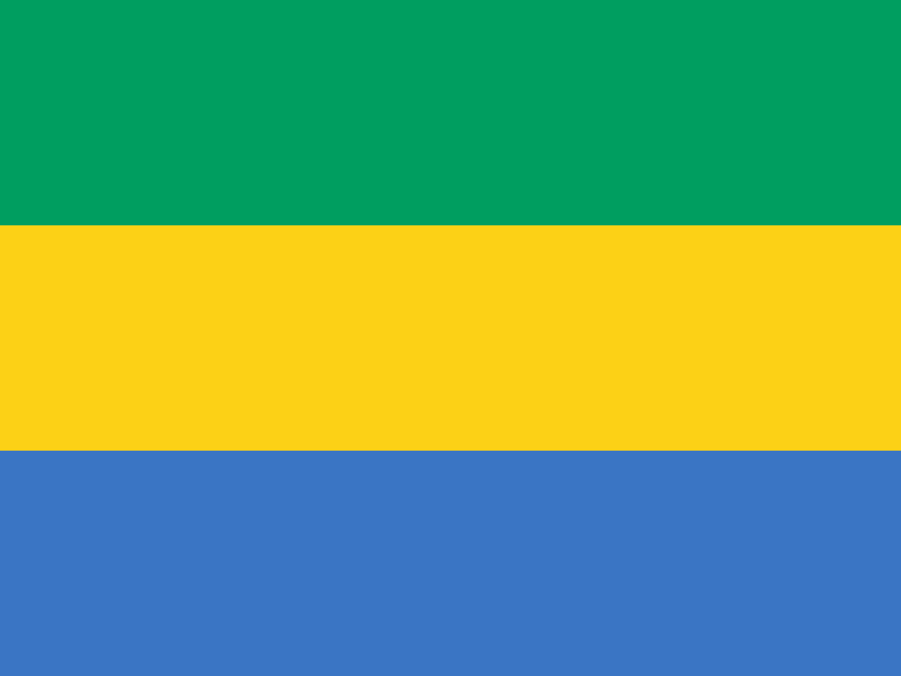
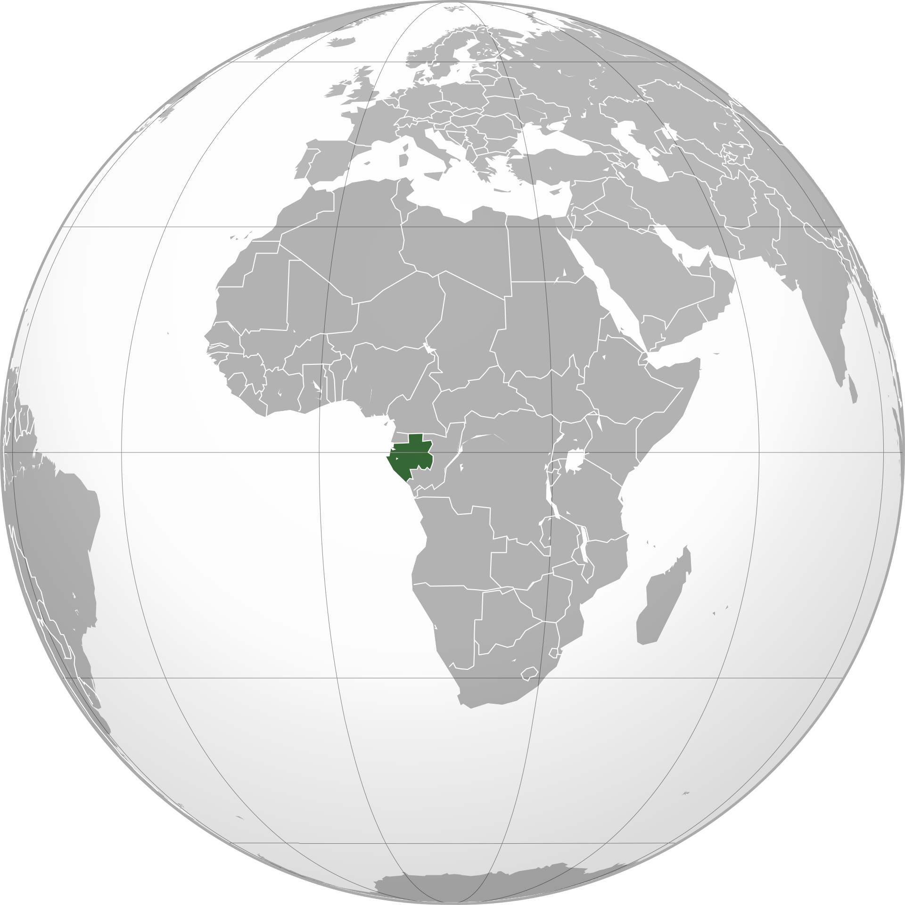

TROIS PAYS AFRICAINS À HAUTS PIB
Le produit intérieur brut (PIB) est l'indicateur économique qui permet de quantifier la valeur totale de la «
production de richesse » annuelle effectuée par les agents économiques (ménages, entreprises, administrations publiques) résidant à l'intérieur d'un territoire.
Le produit intérieur brut est le principal indicateur de la mesure de la production économique réalisée à l’intérieur d'un pays et l'un des agrégats majeurs des comptes nationaux.
Le PIB reflète donc l'activité économique interne d'un pays et la variation du PIB d'une période à l'autre est censée mesurer son taux de croissance économique.
Le PIB par habitant mesure le niveau de vie et de façon approximative celui du pouvoir d'achat car n'est pas prise en compte de façon dynamique l'incidence de l'évolution du niveau général des prix.
Il diffère du revenu national brut (RNB) qui ajoute au PIB (produit intérieur brut) les entrées nettes de revenus de facteurs en provenance de l'étranger (revenus de facteurs provenant
du reste du monde diminués des revenus de facteurs payés au reste du monde).
La composition de cet indice est dans certains cas sujette à caution ou à suspicion, en particulier lorsque les gouvernements y voient un outil politique et qu'ils ont la capacité d'influencer la production de cet indicateur.
Nous nous intéressons dans ce site web à trois pays en particulier,qui sont dans le top 25, dont on fera pas de distinctions entre le PIB et
le PIB par habitant. Ces pays sont: Le Nigéria , l'Afrique du Sud et le Gabon
LE NIGERIA
 
Le Nigeria, ou Nigéria (en forme longue république fédérale du Nigeria, en anglais Federal Republic of Nigeria),
est un pays d'Afrique de l'Ouest. Avec plus de 203 millions d'habitants en ,
le Nigeria est le pays le plus peuplé d'Afrique et le septième pays du monde par son nombre d'habitants.
Situé au bord du golfe de Guinée,Avec une superficie de 923 763 Km2 le Nigeria possède 4 047 km de frontières terrestres, et 853 km de littoral.
Il est bordé à l'ouest par le Bénin sur 773 km, à l'est-sud-est par le Cameroun sur 1 690 km, au nord par
le Niger sur 1 497 km et à l'est-nord-est
par le Tchad sur 84 km.
Mais surtout il est en le pays africain avec le plus haut PIB avec une valeur de 397.27 milliards
(2028 dollar US$ par habitant).
L'AFRIQUE DU SUD
 
L'Afrique du Sud, en forme longue la république d'Afrique du Sud, est un pays situé à l'extrémité australe du continent africain.
L'Afrique du Sud compte plus de 60 millions d’habitants en .Avec une superficie de 1.22Km2 il est frontalier à l'ouest-nord-ouest avec la Namibie,
au nord et au nord-nord-est avec
le Botswana, au nord-est avec le Zimbabwe, et à l'est-nord-est avec le Mozambique et l'Eswatini. Le Lesotho est pour sa part
un État enclavé dans le territoire sud-africain.
L'Afrique du Sud se situe derrière le Nigeria soit le deuxième pays africain avec le plus haut
PIB d'une valeur de 366.3 milliards (6340 dollar US$ par habitant).
LE GABON
 
Le Gabon, en forme longue la République gabonaise, est un pays situé en Afrique centrale avec une superficie de 267 667 km2,
traversé par l'équateur, frontalier à l'est, au sud-est et au sud de la
république du Congo, au nord-nord-ouest de la Guinée équatoriale et au nord du Cameroun. Ancienne colonie française, le Gabon est indépendant depuis
le et a en une population de plus 2.03 millions d'habitants.
Il est le 23ème pays africain avec le plus haut PIB soit une valeur de
17.02 milliards (8030 US$ par habitant)